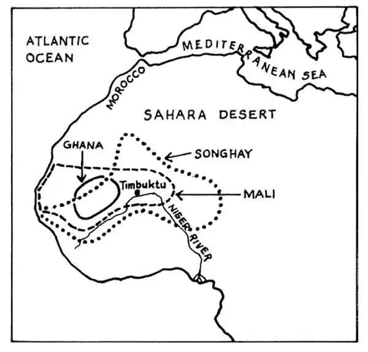

55
Three Kingdoms in West Africa
西非三个王国

AT the same time that medieval kingdoms like England and France were becoming important in Europe, three kingdoms in West Africa also grew strong and wealthy. They were called Ghana, Mali, and Songhay. These kingdoms were south of the Sahara Desert, along the Niger River. On your map each kingdom is outlined with a different kind of line.

Medieval kingdoms of West Africa（中世纪时的西非王国）
This part of Africa was very wealthy because gold was mined there. For many centuries, the peoples of West Africa traded their gold with close neighbors and also with the Berber people north of the Sahara Desert. Some of the gold from West Africa was sold in the Roman Empire.
There are lots of good stories about the gold miners and traders. When the miners had gold to trade, they would carry their nuggets far away from the mines. They didn't want strangers to find out exactly where the gold came from. The miners would wait in a place that both sides agreed upon. The traders would come and leave what they had to trade. After the traders were out of sight, the miners would leave some gold. Then they would hide. They didn't want to meet the traders, who might force them to tell the location of the mines. The traders would then return and see how much gold had been left. If they thought it was a fair trade, they would take the gold and go home. If they thought that not enough was offered, they would back off once more and wait for the miners to leave more gold. When both sides were satisfied with the trade, they would all go home. It was like swapping baseball cards. Both sides had to be happy or there was no trade.
One thing that the West Africans needed to get in trade was salt. Can you guess why? West Africa is very hot. In those days with no refrigerators, salt was used to preserve food. Perhaps you've tasted beef jerky, which is meat that has been dried and preserved by salting. You can think of many other ways we keep our food from spoiling now, but in those days, salt was scarce and valuable. Even today we still use salt as a preservative, and we still say someone is “worth his salt” when he does a job well.
It just so happened that there was a lot of salt on the north side of the Sahara Desert. So, the people of the Niger River area traded with the Berbers of North Africa—gold for salt. Salt was so valuable that West Africans and Berbers traded an even weight of gold for salt—one pound of gold for one pound of salt. That's how valuable salt was. How would you like to be able to make that trade today?
All that gold made a number of the kingdoms in West Africa very wealthy. First a kingdom called Ghana grew large by conquering many of its neighbors. The king's power came from his well-trained army, a skillful cavalry, and gold. When the king of Ghana held an audience, he was surrounded by signs of his power and wealth: pages holding shields, swords with gold handles, horses covered with gold cloths, and the king's own horse tied to a sixty-pound gold nugget! Despite all this wealth, Ghana eventually declined in power, as all empires do sooner or later.
Mali was the next rich, important empire in West Africa. One king, Sundiata, conquered the cities important in the trade crossing the Sahara. He also conquered rich gold fields. This king was not only rich, but he was also smart. Whenever his army conquered new land, he put the soldiers to work converting it to farm land—until it was time for the next battle. Soon Mali was one of the richest farming areas in West Africa, so this kingdom had plenty to eat as well as having gold and a powerful army.
The most famous king of Mali was Mansa Musa, who ruled during the 14th century. He extended his empire westward to the Atlantic Ocean and ruled perhaps eight million people. Muslim traders, both Arabs and North Africans, came to Mali, and Mansa Musa converted to Islam. Like all devout Muslims, he made a pilgrimage to Mecca. Mansa Musa's pilgrimage made him famous! His route took him through Cairo, Egypt. He traveled with 500 slaves, each carrying a six-pound gold staff. There were also one hundred elephants, each said to be carrying one hundred pounds of gold. Several hundred camels carried food, weapons, and other things that the pilgrims needed. In Egypt and in Arabia, Mansa Musa gave away a lot of gold. Muslims are expected to be generous, and Mansa Musa was. He also used his gold to buy presents for the people he met along the way. While he was traveling, someone asked Mansa Musa how big his kingdom was. He replied, “A year.” What do you think he meant by this? Did you guess? He meant that it took him a year to travel from one end of his kingdom to the other.
When Mansa Musa came home, he brought with him artists and architects to build mosques in the city of Timbuktu and other cities in Mali. He also brought scholars and many books to start a library. Most of the books were written in Arabic, the language used by many Muslims. Timbuktu became a center of learning, and a large book market opened there. Astronomers, mathematicians, philosophers, and poets flocked to the city with its large library and many mosques. Doctors and lawyers worked and taught there. The king supported them all. A lot of foreigners came to visit Timbuktu. Some of these visitors wrote about their trips, so we can read what they said. One Muslim traveler who came from North Africa discovered an astonishing thing: Women were allowed to study and were treated with as much respect as the men!
After Mansa Musa died, the empire of Mali began to split apart. Soon a third important empire, Songhay, arose in the Niger River area. In Songhay, the king's wealth again was based on gold, and he commanded strong armies. The king, Sunni Ali Ber, expanded Songhay until its empire was larger than Mali had ever been. He died in 1492, the year that Columbus set sail for the Americas. After this time, Songhay was weakened by foreigners, first by Moroccans from North Africa and then by the Portuguese who began sailing and trading along the African coast. The king of Songhay no longer had the power or wealth to hold his territory together. After a thousand years of wealthy empires, the lands along the Niger River split into small kingdoms.
【中文阅读】
当中世纪与诸如英国和法国这样的王国在欧洲逐渐兴盛的同一时期，西非的三个王国也变得富强起来。它们分别被称为加纳、马里和桑海。这些王国都在撒哈拉沙漠南边，尼日尔河沿岸。在你面前的这幅地图上，每个王国都用不同的线条标注出轮廓。
非洲的这个区域非常富有，因为那里有金矿可以开采。许多世纪以来，西非人用黄金和近邻也和撒哈拉沙漠北边的柏柏尔人做交易。有些产自西非的黄金还被卖到罗马帝国。
有许多关于金矿矿工和商人的有趣的故事。当矿工们有金子要卖的时候，他们会带着金块到离金矿很远的地方。他们不希望陌生人发现金子到底是从哪里来的。矿工们会在事先约定好的地方等着。商人来到这里，把他们用来交易的东西留下来再离开。等商人走出视线之后，矿工会留下一些金子。然后他们会找个地方藏起来。矿工不想和商人见面，担心自己会被他们强迫说出金矿的位置。接下来商人会回到原地看看有多少金子留下来。如果他们认为交易很公平，就直接带上金子回家了。如果他们觉得给的金子不够，就会再次走开，等矿工再拿出一些金子。只有双方都对交易满意，他们才会回家。就像交换棒球卡一样。双方必须都乐意才可以，否则就做不成买卖。
西非人需要从交易中得到的一件东西是盐。你能猜到这是为什么吗？西非天气炎热。那时又没有冰箱。盐是用来保存食物的。也许你尝过牛肉干，那就是先晒干、再用盐腌制的肉。现在你可以想到很多其他办法来防止食物变质，但是在当时盐是很稀有很贵重的东西。甚至现在我们还在用盐作食物防腐剂。如果有人工作干得很好，我们还会说那个人“值他的那份盐” ［1］ 。
碰巧的是撒哈拉沙漠的北边有丰富的盐。所以，尼日尔河流域的人和北非的柏柏尔人做买卖——用黄金换盐。盐太珍贵了，西非人和柏柏尔人做买卖是以等量的黄金换等量的盐——一磅金子换一磅盐。盐多宝贵啊。现在你怎么希望能做成那样的生意呢？
所有这些黄金让西非的许多王国变得非常富有。最初称作加纳的王国征服了许多邻国，从而扩大了版图。国王有这样的权力是因为他有训练有素的军队、作战娴熟的骑兵和大量的黄金作为支撑。加纳国王举行接见仪式时，周围的一切都显现出他拥有至高无上的权力和巨大的财富：那些高举着盾牌的骑士侍童剑上所佩的黄金剑柄十分耀眼，所牵的马披着金毡更显尊荣，国王本人的马拴在一个60磅重的大金块上！虽然这么富有，加纳的国力却逐渐衰落，就像所有的帝国一样，迟早都要衰落的。
接下来，西非最富有的强国就是马里。国王松迪亚塔夺取了横贯撒哈拉沙漠的所有重要的商业城市。他也夺取了富含金矿的区域。这个国王不仅富有，而且聪明。每次军队占领了新的土地，他就让士兵开垦，把土地变成农田——直到下一次开战。很快马里就成为西非最富庶的农业地区之一，所以这个国家既有充足的食物，又盛产黄金，还有一支强大的军队。
马里最著名的国王是曼沙·穆萨，他的统治时期是在14世纪。他将帝国向西扩张至大西洋，帝国内有将近八百万人口。穆斯林商人，包括阿拉伯人和北非人都来到马里做生意。后来曼沙·穆萨成了伊斯兰教徒。像所有虔诚的穆斯林一样，他也去麦加朝圣。曼沙·穆萨的朝圣之旅让他声名远扬！他走的路线经过埃及的开罗。有五百名奴隶随行，每个奴隶都带着6磅重的黄金杖。还有一百头大象，据说每头大象都驮着100磅黄金。几百只骆驼驮着食物、武器以及其他一些朝圣者需要的物品。在埃及和阿拉伯，曼沙·穆萨赠送了大量黄金。穆斯林被认为应当慷慨大方，曼沙·穆萨的确如此。他还用金子买礼物送给沿途遇到的人。在旅途中，有人问曼沙·穆萨他的王国有多大。他回答道：“一年。”你认为这是什么意思？你猜出来了吗？他的意思是从王国的一端旅行到另一端，他要花一年的时间。
曼沙·穆萨返回家乡时，带回了一些艺术家和建筑师让他们在廷巴克图城和马里的其他城市建造清真寺。他还带回了一些学者和许多书籍准备建一座图书馆。大部分书籍都是阿拉伯语的，即许多穆斯林使用的语言。廷巴克图成了一个文化知识中心，这里还开了一家大型图书市场。天文学家、数学家、哲学家和诗人蜂拥而至，来到这座有着大型图书馆和许多清真寺的城市。还有医生和律师在这里工作和教学。国王对这些都很支持。大批外国游客前来参观廷巴克图。有些游客写下了旅行见闻，我们现在可以读到这些游记。一位来自北非的穆斯林游客发现了这样一件令人震惊的事情：这里允许女人接受教育，而且她们和男人一样受人尊重！
曼沙·穆萨死后，马里帝国开始分裂。不久，第三个重要的帝国，桑海，在尼日尔河流域兴盛起来。在桑海，国王的财富也是以金矿为基础的，他也同样掌握着强大的军队。国王逊尼·阿里·贝尔不断扩张桑海的疆土，直到他的帝国比马里曾经的版图还要大。他死于1492年，也就是哥伦布向美洲远航的那一年。在这以后，桑海由于外族入侵而渐渐衰弱，这些入侵者开始是北非的摩洛哥人，后来开始沿非洲海岸航行和经商的葡萄牙人也加入进来。桑海国王再也没有一统江山的权力或财富了。在这些富有帝国风光了一千年后，尼日尔河流域的土地分裂为许多小王国。